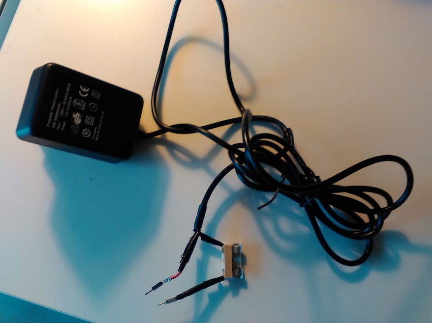
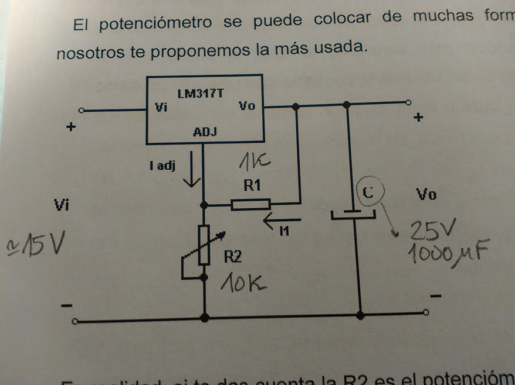
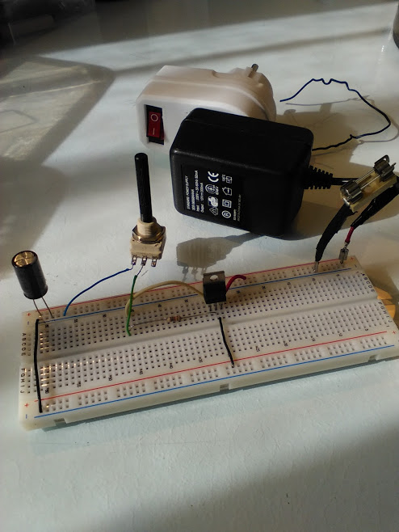
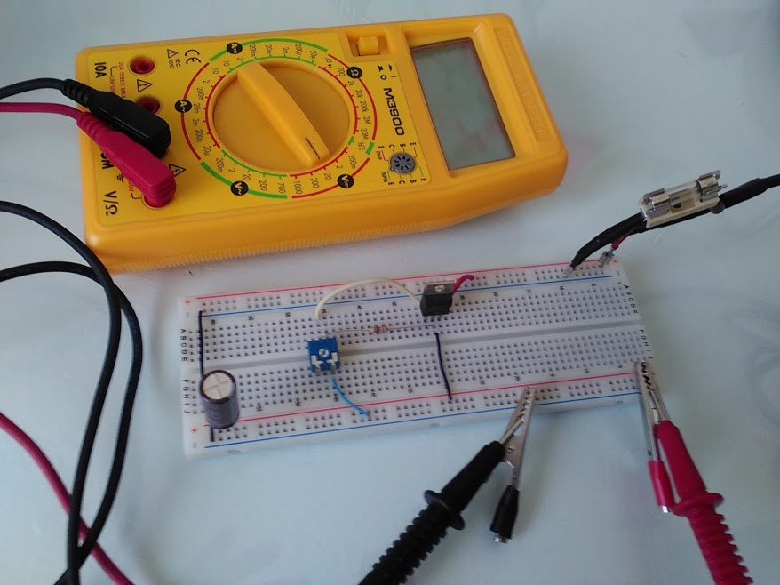
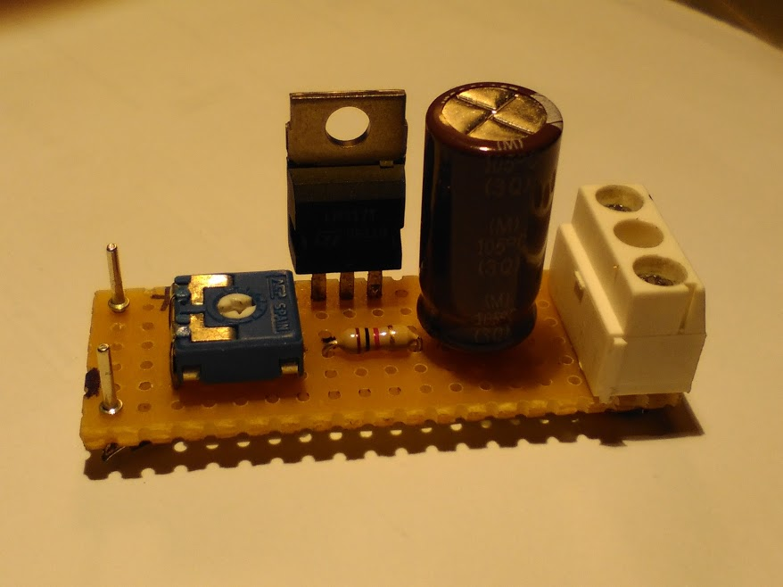
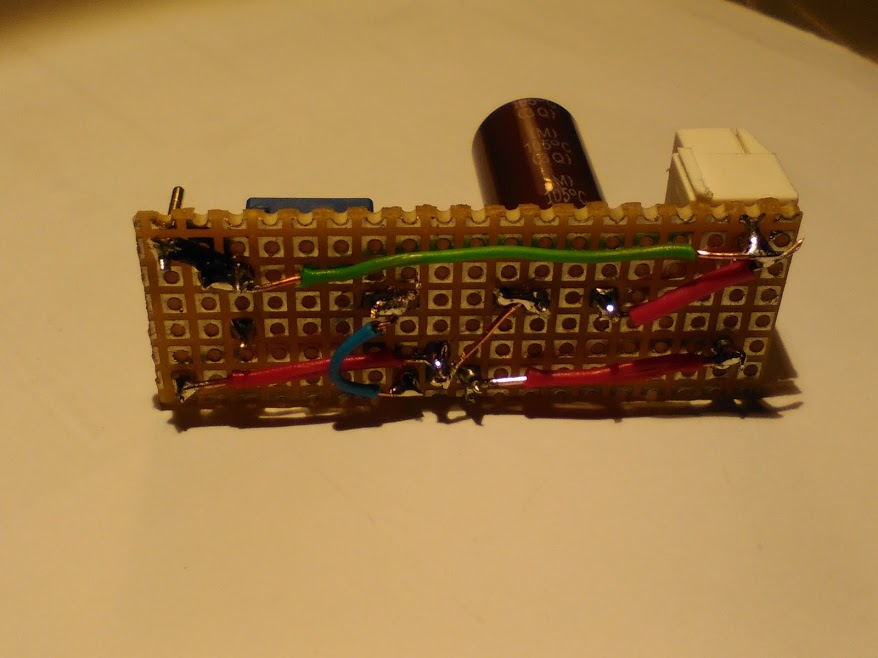
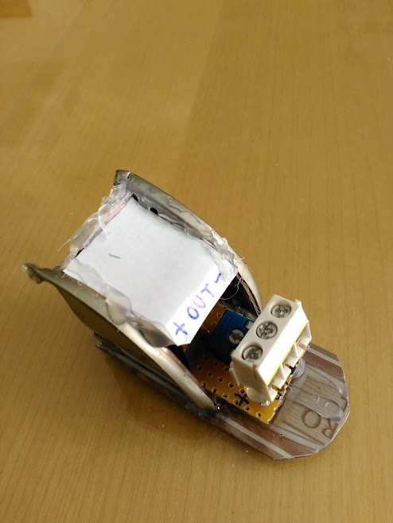
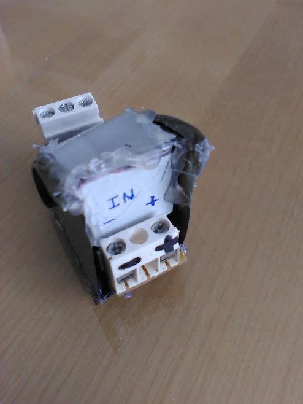

Se trata de construir una fuente de alimentación de corriente continua con una salida de tensión variable que nos ayude a realizar algunas prácticas en casa.
Empezaremos utilizando una fuente de alimentación de un viejo teléfono móvil. Esta fuente dará una salida fija que luego, mediante un circuito adecuado podremos regular. El cargador de teléfono que yo utilicé fue este:

Si miramos en la placa de características del cargador podremos encontrar los valores de entrada en corriente alterna de tensión 230V, frecuencia 50-60Hz e intensidad 50mA. También podremos ver los valores de salida de corriente continua de tensión 12V e intensidad 300mA.
El conector de salida de corriente continua lo he cortado y he dejado los cables preparados para poder conectarlos a una placa de prototipos. También he añadido un fusible de 200mA para asegurarme de que cualquier cortocircuito provocado por un contacto accidental entre los terminales no dañe el dispositivo.
Así solo tenemos una fuente de tensión fija de corriente continua de unos 15V medidos a la salida en vacío. A nosotros nos interesa una fuente que podamos regular en tensión, obteniendo valores en un rango continuo comprendido entre los 0V y los 12V. Para ello necesitamos construir un circuito regulador a partir del siguiente esquema (es el más sencillo que he encontrado):

Donde Vi es la salida de corriente continua del cargador, aproximadamente unos 15V en vacío. Ahí es donde deberemos conectar el circuito del esquema. Haciendo pruebas y más pruebas..


Al final pude construir el circuito sobre una placa microperforada, muy fácil de montar pero un poco engorrosa de conectar...


Una vez ideada la carcasa para proteger los componentes, tenemos un nuevo esperpento electrónico...

